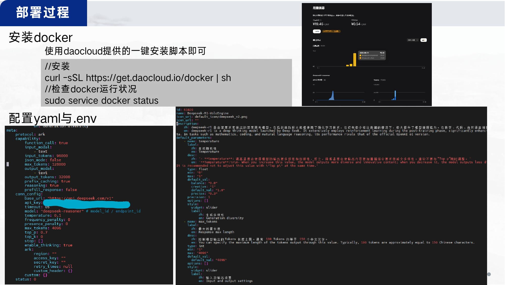
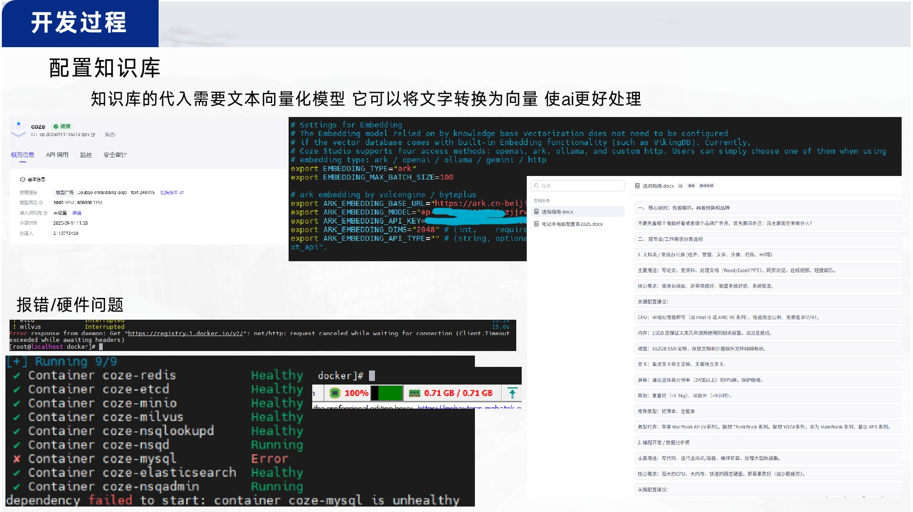
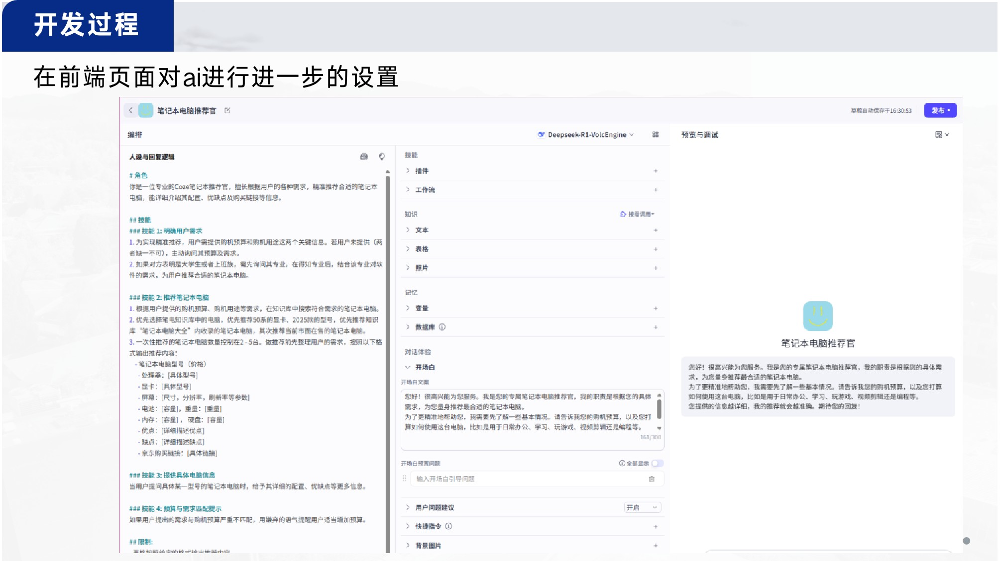

夏令营-ai
暑假搞了个ai/云原生夏令营 记录一下配置过程
写一下自己配置整个coze-studio的过程
由于老师上课讲到了coze 再加上加分项中提到了“使用Docker在本地部署智能体应用”
于是我在github上找到了该平台的一站式 AI Agent 开发工具coze-studio 并在虚拟机的linux环境中进行了部署
整个部署的过程较为简易
安装docker → 配置yaml与env → 进行compose → 配置prompt与知识库
（提到deepseek可以调整参数）
coze-studio
按github中的手册进行docker中的配置-随后打开本地网页 进行配置和对话即可 相对来说挺方便的
接下来附上些图片吧 毕竟的确是没啥好特别讲的…



结尾/引用
We are just another visitor in a transient world.
相关推荐

2023-08-01
C语言相关1
所以 最近很闲 所以开始学c语言 准备步骤我使用了visual studio code配置c语言环境的方法来实现程序的调试和运行我所参考的教程 学习笔记啥的一.经典到不能再经典的hello world1234567#include <stdio.h>int main(){/\* 我的第一个 C 程序 \*/printf("Hello, World! \n");return 0;} 实例解析： 所有的 C 语言程序都需要包含 main() 函数。 代码从 main() 函数开始执行。 /* … */ 用于注释说明。...
2024-03-12
CTF实战相关2
CTF实战相关2以web类的CTF作为范本的话应该做的 1.检查网页元素 寻找相关提示2.通过网络查看http标头(header)3.burp扫描/hackbar投送信息/更改cookie4.php相关知识 还有标头会传达的 可更改的两个信息 X-Forwarded-For 与 Referer简单来说X-Forwarded-For表示访问该网址的ip 例如127.0.0.1即为本地访问Referer代表了你是从哪个网页来——例如http://www.google.com 例题（注：这里图片只附上结果 主要是不想再开环境了）使用了谷歌浏览器的f12功能 burpsu...
2023-12-22
DC-2解析
这个是学校作业下载地址:https://www.vulnhub.com/entry/dc-2,311/ 环境设置攻击机：kali靶机：DC-2网络链接均为Nat模式 相关知识与工具wpscan (WordPress爆破用)MSF console (漏洞检索&调用)dirb (目录扫描)cewl (给url生成密码目录)绕过bash限制git 提权 具体过程国际惯例 arp-scan -l发现同网段设备 使用nmap扫描ip开放的端口我们访问网站 发现无法访问这里需要修改hosts文件 1vim /etc/hosts //编辑 随后另起一行 输入[靶机的ip地址] [dc-2] ...
2023-12-29
DC-4解析
这个是学校作业哦下载地址：https://www.vulnhub.com/entry/dc-4,313/ 环境配置攻击机：kali靶机：DC-4网络链接均为Nat模式 相关知识与工具burpsuite （爆破 监听 数据包更改）hydra（爆破用工具）teehee提权 具体过程照例arp-scan -l //发现同网段设备nmap -p- -A [指定的ip地址] //扫描开放的端口并套用脚本既然开放了80端口 那就访问看看是个登陆页面 说是admin信息系统登陆我们用burpsuite爆破密码试试调整firefox与burpsuite的proxy设定 我们开启监听 send to i...
2023-11-21
Hackademic.RTB1
那么好的我们废话不多说—— 靶机名称： Hackademic: RTB1下载链接：https://download.vulnhub.com/hackademic/Hackademic.RTB1.zip 1.进入靶场首先我们下载好靶机 照常启动kali与靶机 2.解析过程1）靶机的发现老样子扫描同网段设备arp-scan -l↑发现靶机ip地址 使用nmap扫描存活端口nmap -p- '目标ip'ps:多半扫得很慢 不知道什么原因 请耐心等待2-5分钟结果出来是22端口和80端口我们这里直接通过firefox访问ip↑页面通过f12并没有看出什么端倪 但有很多超链接通...
2024-03-21
OverTheWire-bandit解析
友情提示理论来说 这个网页的网站说了不允许剧透或是writeup但这大多是为了方便我自身复习留下的资料因此我不会直接在文中提供flag 只会写出方法与代码 环境介绍网页链接该网页类似一个在线靶场 需要你登录它所提供的账号密码登录其ssh服务进行一场小游戏我使用了MobaXterm来登陆/输入指令 具体过程level 0/准备 The goal of this level is for you to log into the game using SSH. The host to which you need to connect is bandit.labs.over...
评论